Activity: Aligning holes using a user-defined axis
Learn how to use the Aligned Holes relationship command. The previous activity used an orthogonal face to define the alignment axis. This activity uses a non-orthogonal axis. The axis is defined by a plane whose first two points are the axis of the first hole selected and the third point is a center point on one of the other holes in the select set. All holes in the select set are aligned with a user-defined axis.
Click here to download the activity file.
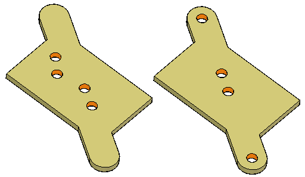
-
Open coplanar_axis_custom.par.
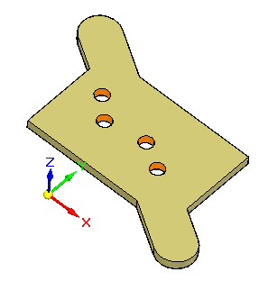
-
Select the four holes shown to align.
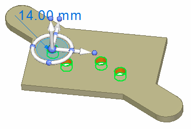
On the Home tab→Face Relate group, choose the Aligned Holes command .
On the command bar, turn on the Persist option  .
.
Notice the message in PromptBar to select a point or a plane.
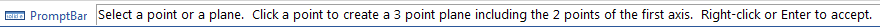
Select the circular edge shown. The four holes are axial aligned. On the command bar, click Accept.
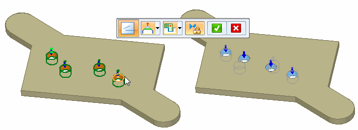
Press the Escape key to end the Aligned Holes relationship command.
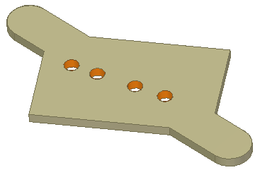
The holes are aligned but not aligned with a base axis. The Design Intent panel does not detect these holes as being aligned. Because we set the relationship to Persist (1), the holes remain aligned.
Select the hole shown and then click the axis shown to start the move command.
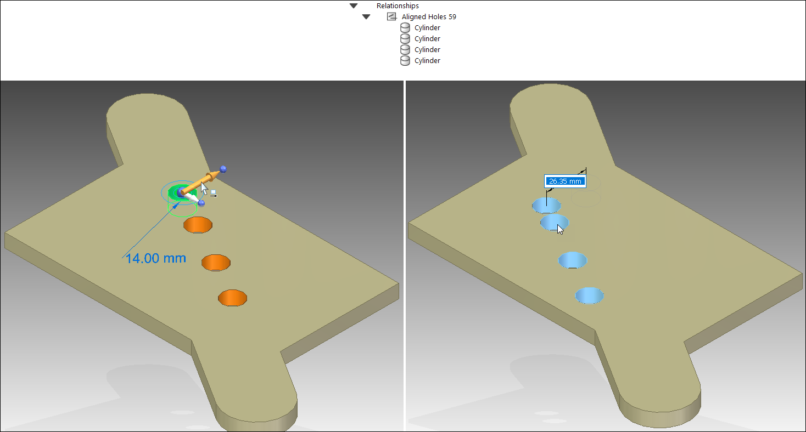
Notice that as the selected hole moves, the remaining holes stay aligned.
When moving a set of holes that are axially aligned, the spacing between the holes remain unchanged if the move direction is perpendicular to the alignment axis. If the move direction is not perpendicular to the alignment axis, then the hole spacing may not remain fixed. To ensure that the holes maintain a fixed spacing, it is recommended that locked dimensions be added to the hole spacing.
Press Escape to end the Move command.
We applied a persistent Aligned Holes relationship to demonstrate how the holes remain aligned when an aligned hole is moved.
In the PathFinder Relationships collector, delete the persisted Aligned Holes relationship. You will create another Aligned Holes relationship in the next step.
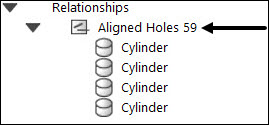
Apply a concentric relationship between hole (1) and cylindrical face (2).
Apply a concentric relationship between hole (3) and cylindrical face (4).
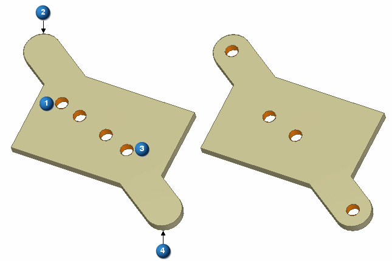
Select the four holes.
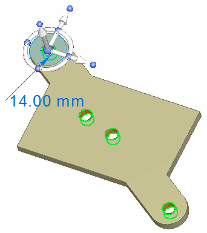
Choose the Aligned Holes relationship command.
Select the circular edge shown to define the axial alignment direction. On the command bar, click Accept. Press Escape to end the Aligned Holes command.
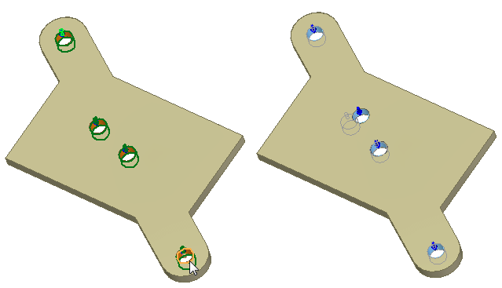
To keep these holes aligned you could persist the Aligned Holes relationship.
In this activity you learned how to align holes along a custom axis. The Design Intent panel does not recognize the design intent in non-orthogonal alignment unless the alignment is persisted.
-
Close the file and do not save.
-
Click the Close button in the upper-right corner of the activity window.